Fitness site
Hábitos saludables
- Enfoque
- Rutinas
- Alimentación
Enfoque
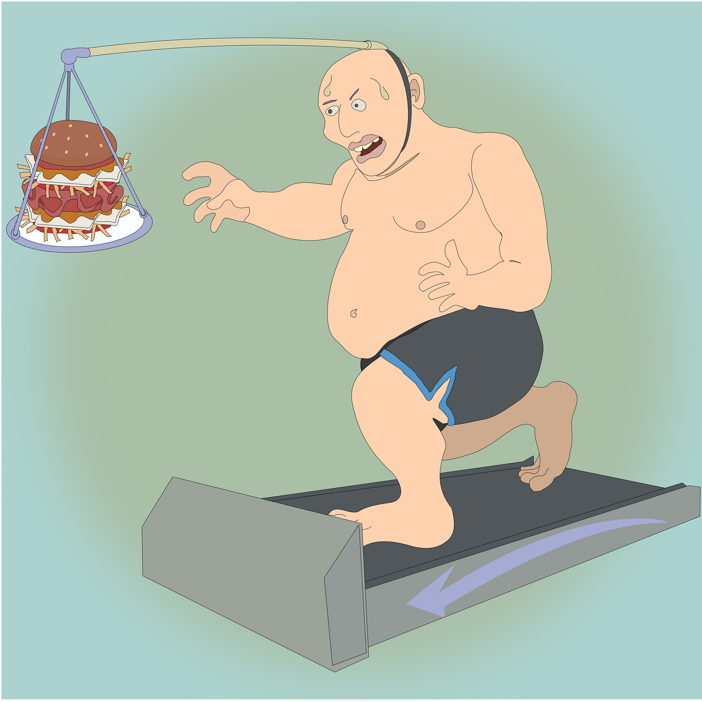¿como llevar una vida más saludable?
llevar una vida saludable va muy relacionado con la disciplina y aún más para las personas que intentan pasar de hábitos no saludables a saludables, los resultados no llegan solos así que hay que trabajar para conseguir nuestros objetivos. En primer lugar es bueno fijar una fecha de comienzo; el lunes, el martes… lo importante es cumplir con esta fecha de comienzo, esto nos ayudará a comprometernos con este cambio. Los días previos debemos trabajar mentalmente todos los beneficios que vamos a conseguir con ese cambio de vida, anotar estos beneficios también es recomendable para concientizarnos más sobre estos.
debemos fijarnos cuales son los objetivos que queremos conseguir y la forma en que los vamos a cumplir, lo importante es ir paso a paso, para que todo sea un cambio gradual porque como dicen “Roma wasn´t build in one day”. pues todo tiene que llevar un proceso, y para tener un cambio físico notable este proceso está básicamente formado por el ejercicio y la alimentación, esta última siendo la más importante pero juntas nos permiten llevar nuestros objetivos a otro nivel. el ejercicio debe ser cardiovascular (es decir donde se quema grasa) y anaeróbico (pesas) para aumentar nuestra masa muscular. Esto debe ir obligatoriamente acompañado por una buena alimentación, en esta es recomendable comer 5 comidas diarias y allí deben haber 3 comidas más abundantes o llenadoras, si no conoces buenos planes alimenticios, no te preocupes! pues más adelante hablaremos de ellos, los beneficios, recetas y más.
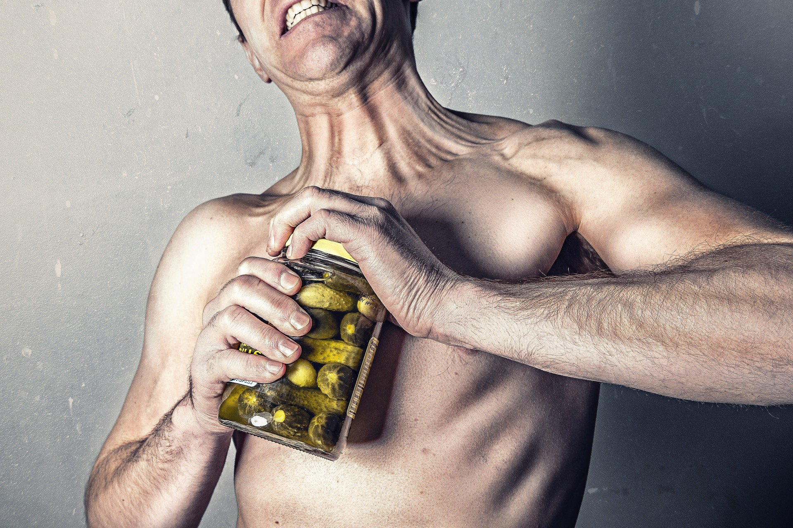Claro está que el deporte es vital para cumplir con el cambio al que esperamos llegar, y su importancia radica en que nos ayuda a mejorar nuestra nuestra condición física y nuestra composición corporal, disminuye el riesgo de enfermedades cardiacas, ayuda a controlar el estrés, mejora el humor y nuestra función cognitiva entre muchos beneficios más. lo importante de llevar una vida saludable es ser constante, adoptar hábitos saludables desechando los mitos de las dietas que son extremas y solo sirven para objetivos a corto plazo que eventualmente desaparecerán.
¿cómo aumentar masa muscular?
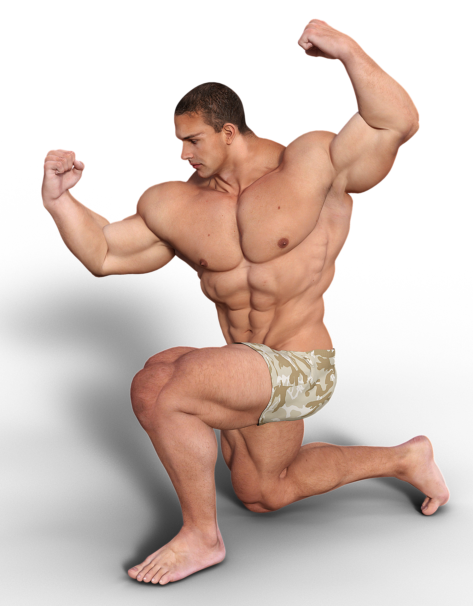Está comprobado que la capacidad de las personas para aumentar la masa muscular está fuertemente relacionada a la genética, sin embargo, un entrenamiento adecuado puede influir notablemente sobre estos factores genéticos, pues se pueden diseñar buenos planes de entrenamiento que permitan incrementar la masa muscular basados en ejercicios intensos (peso y sobrecargas), ejercicios de volúmen(series y repeticiones) y tiempo de descanso que es igual de importante a los ejercicios.
A su vez, el aspecto nutricional principal para el aumento de masa muscular debe ir enfocado a un balance energético positivo, es decir, al consumo de más kilocalorías donde estas tengan un excedente de 300 a 500 kilocalorías diarias, suficientes para generar anabolismo muscular.
En teoría, la alimentación adecuada para el incremento de la masa muscular debe incluir un superávit energético de unas 300 a 500 kilocalorías, y tener una proporción de hidratos de carbono, proteínas y grasas de 55-60%, 12 a 15% y 25-30% respectivamente. Podemos tomar como ejemplo a un deportista de 70 kg que desea incrementar su masa muscular, si tiene un gasto calórico diario promedio de 3000 kilocalorías, deberá ingerir unas 3500 kilocalorías, 525 gm de hidratos de carbono (60%), 131 gm de proteínas (15%) y 97 gm de grasas (25%). Esto se traduce en unos 7,5, 1,9, y 1,4 gm/kg/día de hidratos de carbono, proteínas y grasas respectivamente. Es obvio que estas proporciones pueden variar según las otras actividades físicas del deportista, y según otros aspectos individuales como capacidad gástrica y disponibilidad de alimentos.
La distribución diaria energética de los mismos puede ser un 20% al desayuno, un 30% en el almuerzo, otro 25 a 30% en la cena, y un 20 a 25% como merienda o colación entre comidas o antes de dormir.
¿cómo perder grasa?
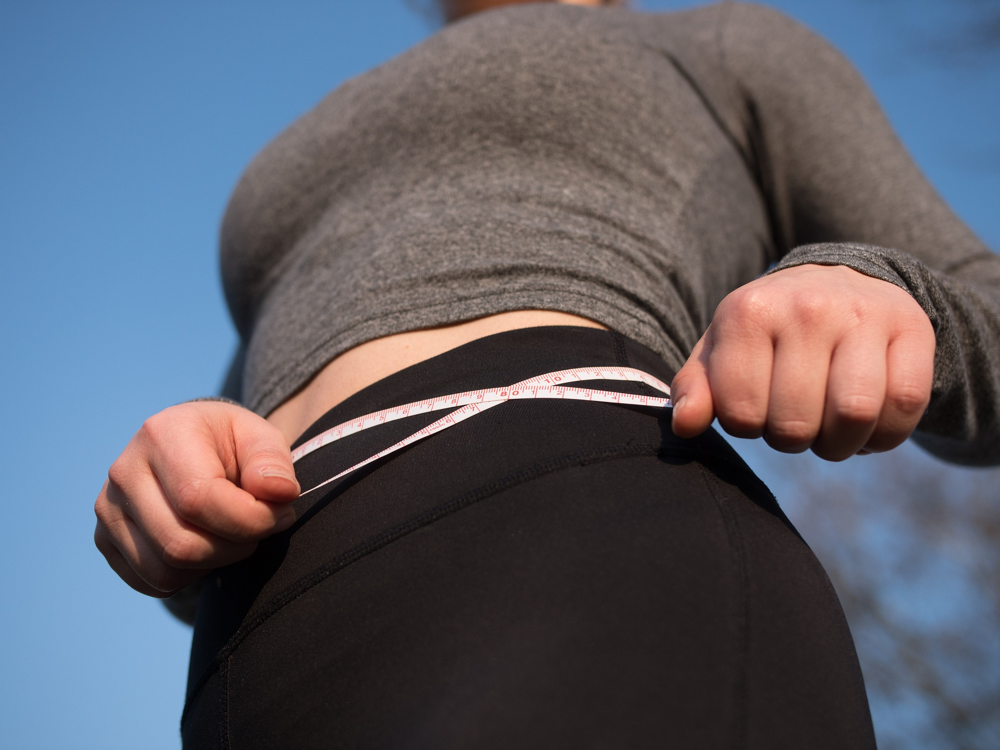Cuando una persona tiene la meta de perder grasa normalmente empieza con la idea de restringir la cantidad de alimentos que consume, y de forma alterna realizar ejercicios para quemar calorías extras.
Lo ideal es visitar al nutriólogo quien te podrá asignar un plan alimenticio de acuerdo a las necesidades y características de cada uno, y de manera simultánea hacer ejercicio preferiblemente en un gimnasio, y si es posible tener un entrenador personal o como alternativa adquirir algún plan de entrenamiento en internet. Esto puede resultar en un gasto considerable, y es por ello que aquí te ayudaremos mostrándote alimentos que puedes consumir con base a tus objetivos, recetas saludables, rutinas y ejercicios precisos para aumentar masa muscular o bajar de peso, dependiendo de cual sea tu meta.
basados en lo condicional de la alimentación y el ejercicio para bajar de peso entonces:
Se recomienda bajar de peso del 5% al 10% y mantenerlo.
Se recomienda hacer ejercicio y cambiar los hábitos alimenticios en lugar de realizar dietas.
Se recomienda disminuir de 500 a 1000 kcal.
Se recomienda hacer 150 minutos de ejercicio semanal.
Es importante realizar trabajo aeróbico(cardio) como de sobrecarga(pesas).
Rutinas
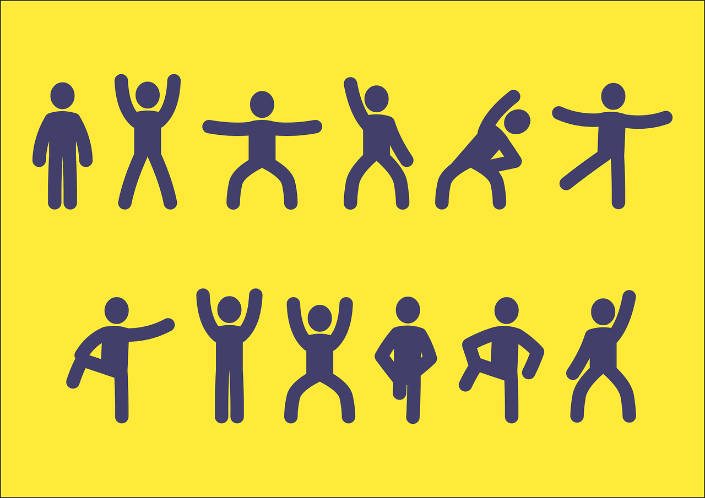Existen infinidad de ejercicios los cuales podemos realizar en un gimnasio, parque o incluso en casa. Sin embargo, los ejercicios deben ir enfocados a lo que queremos, pues si el objetivo es aumentar la masa muscular únicamente o bajar de peso, mi rutina debe reflejar esta meta.
Es por ello que te dejamos los siguientes ejercicios, los cuales podrás realizar de acuerdo a lo que esperas obtener:
mejores ejercicios para aumentar masa muscular
mejores ejercicios para pecho:
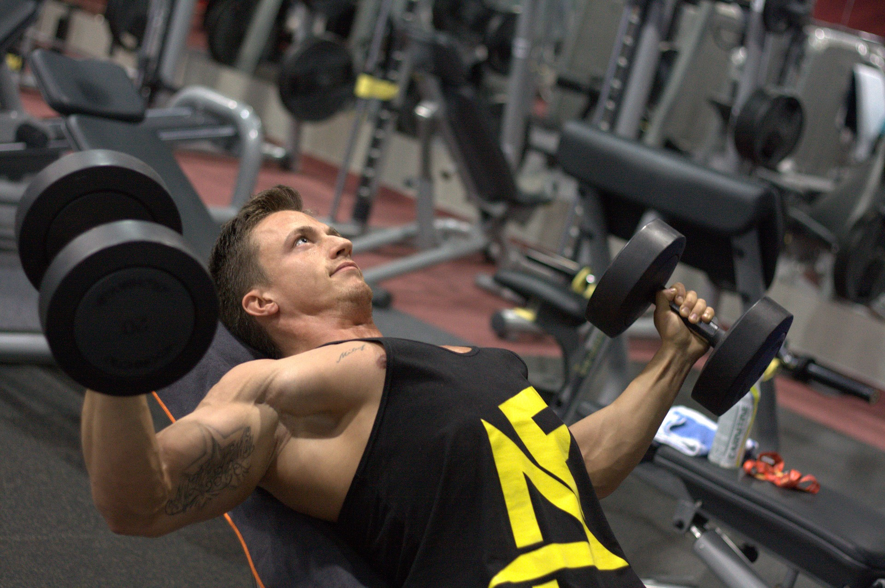- Press inclinado con mancuernas:proporciona una gran activación pectoral.
- Flexiones:Es de los mejores ejercicios para la activación del pectoral y además requiere únicamente del peso corporal y es extremadamente sencillo de realizar.
- Press inclinado con barra:este es un gran ejercicio para trabajar la parte superior del pectoral.
- Aperturas en máquina:la tensión sobre el pectoral se mantiene durante todas las fases del ejercicio.
- Cruces con polea alta:hay una tensión constante durante el intervalo completo de recorrido, a su vez, existe un bajo peligro de lesión y de super congestión.
- Press de banca con barra o mancuerna:un excelente ejercicio que no solo trabaja los pectorales, sino que también la musculatura del hombro(deltoide anterior) y el tricep.
- Aperturas planas con mancuerna:gran ejercicio para romper fibras musculares, esto permite que el volumen del pectoral aumente.
mejores ejercicios para biceps:
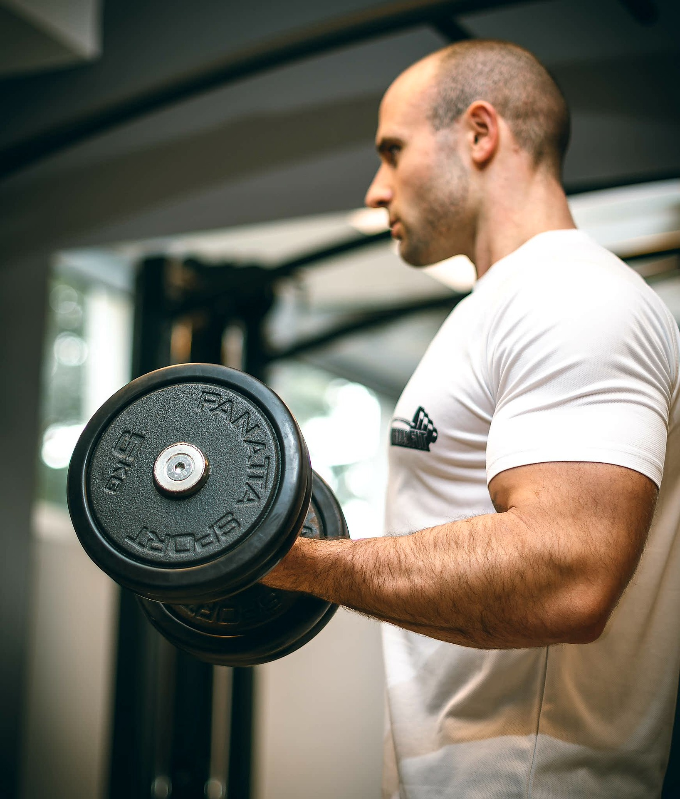- Curl con barra:Es uno de los ejercicios de bíceps más tradicionales porque agranda su tamaño y aumenta su fuerza, además de que es también un ejercicio simple de hacer.
- Curl con mancuerna:Este ejercicio de curl de bíceps también se llama curl martillo y se basa en colocar las muñecas en una posición neutral donde se aleja el bíceps de los antebrazos.
- Curl con banda de resistencia o polea:Este ejercicio se hace de pie y con una banda elástica o en polea. Con tus pies vas a apretar el extremo de la banda y el otro extremo se sujeta con las manos y con las palmas hacia arriba.
- Dominadas supinas:Las dominadas son un ejercicio estupendo para trabajar tu espalda y también tus bíceps.
- Curl de biceps con banco inclinado:Para aumentar aún más el trabajo del bíceps nos sentamos en un banco ligeramente inclinado y realizamos curl de bíceps.
- Curl martillo:nos da mayor resistencia, y es un buen ejercicio para optimizar el trabajo y la forma de los brazos.
- Curl 21:Si lo que quieres es trabajar de forma agresiva y exigente los biceps, este es el mejor ejercicio.
mejores ejercicios para Triceps:
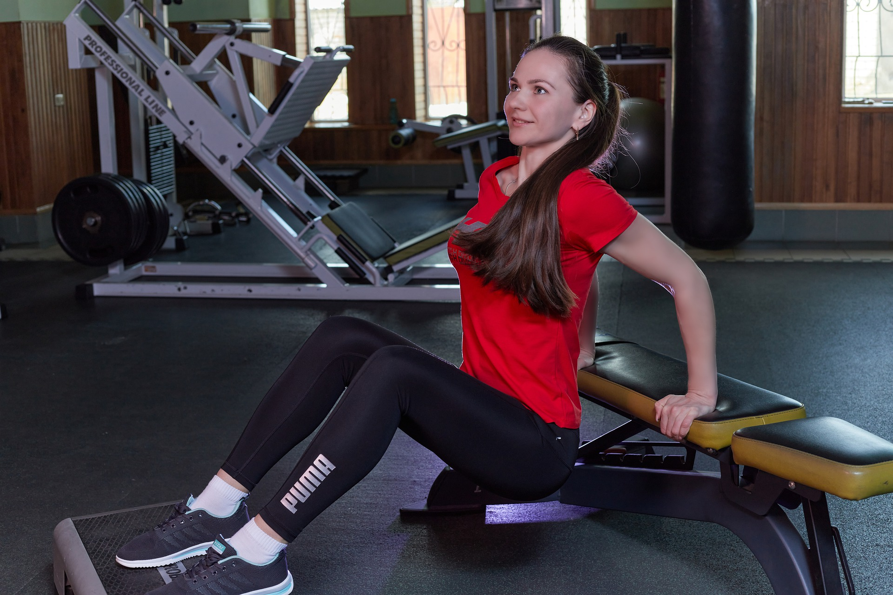- Fondos de triceps:Es uno de los ejercicios de bíceps más tradicionales porque agranda su tamaño y aumenta su fuerza, además de que es también un ejercicio simple de hacer.
- Extensión de codos sentado:Este ejercicio de curl de bíceps también se llama curl martillo y se basa en colocar las muñecas en una posición neutral donde se aleja el bíceps de los antebrazos.
- Tríceps en polea superior con barra o cuerda:Este ejercicio se hace de pie y con una banda elástica o en polea. Con tus pies vas a apretar el extremo de la banda y el otro extremo se sujeta con las manos y con las palmas hacia arriba.
- Press francés:Las dominadas son un ejercicio estupendo para trabajar tu espalda y también tus bíceps.
- Flexiones con manos juntas:Para aumentar aún más el trabajo del bíceps nos sentamos en un banco ligeramente inclinado y realizamos curl de bíceps.
- Extensiones con mancuerna:nos da mayor resistencia, y es un buen ejercicio para optimizar el trabajo y la forma de los brazos.
mejores ejercicios para espalda:

- Peso muerto:este es un ejercicio básico en el que se trabaja toda la musculatura de la espalda, tanto la parte superior como la inferior.
- Dominadas:este ejercicio tiene un efecto similar al peso muerto en el que también se trabaja toda la espalda.
- Remo con barra con banco inclinado:este ejercicio se enfoca en trabajar mayormente la parte superior de la espalda, además, se encarga de brindar una mayor activación a esta parte del músculo lo que ayuda a desarrollarse de mejor manera.
- Jalones de pecho: es un ejercicio ideal para desarrollar el dorsal ancho de la espalda, asimismo su trabajo implica a otros músculos como el deltoides posterior, los romboides y el trapecio.
- Remo con mancuernas:con este ejercicio se trabajan ambos lados de la musculatura de la espalda de manera individual.
- Pull over con polea alta: con este ejercicio se logra trabajar el redondo mayor y el dorsal ancho, además con este ejercicio también se ejercita de buena manera el tríceps.
- Remo con T:con este ejercicio se busca trabajar casi toda la espalda en un solo movimiento.
mejores ejercicios para abdomen:
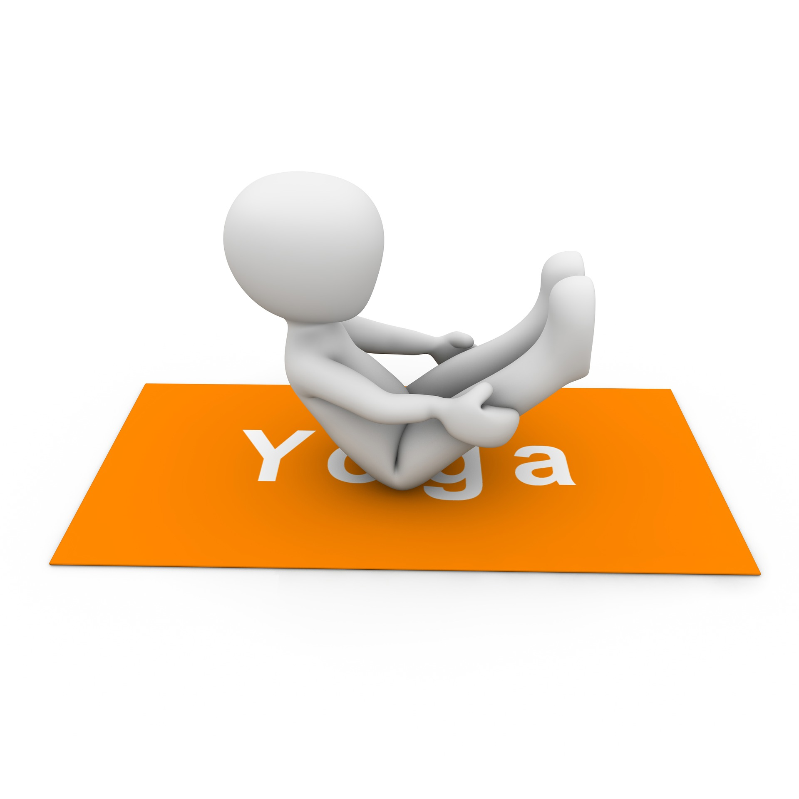- Plancha:es de los mejores ejercicios para definir el abdomen, además también de que nos brinda resistencia.
- Plancha lateral:este ejercicio sirve mayormente para trabajar los oblicuos.
- Rueda abdominal:este ejercicio no solo sirve para trabajar el abdomen sino también para generar una mayor activación en el crecimiento de este.
- Tabla lateral con levantamiento de piernas:con este ejercicio se trabajan los abdominales, glúteos, lumbares y abductores.
mejores ejercicios para piernas y glúteos:

- Prensa de pierna:Este es uno de los mejores ejercicios para conseguir la hipertrofia del tren inferior, aporta fuerza pero además es de los ejercicios que más ayuda al crecimiento de los músculos implicados.
- Extensión de cuádriceps:Es sin duda uno de los principales ejercicios para trabajar los cuadriceps, además, es un ejercicio muy sencillo de realizar y otorga un mayor volumen al músculo con respecto a otros ejercicios debido a la exigencia de este ejercicio.
- Curl femoral:El enfoque de este ejercicio se basa en trabajar y fortalecer la flexibilidad de los isquiotibiales, aunque también trabaja otros músculos del tren inferior.
- Sentadillas:De los ejercicios más básicos pero también más importantes para ejercitar el tren inferior, pues no solo nos da más volumen y tonificación sino también resistencia.
- Peso muerto:con este ejercicio se pierde gran cantidad de calorías, es donde más músculos se trabajan del tren inferior y fortalece el agarre.
- Sentadilla con barra:Además de trabajar los cuadricepts e isquiotibiales, este ejercicio trabaja la espalda, tanto dorsales como lumbares.
mejores ejercicios para quemar calorías
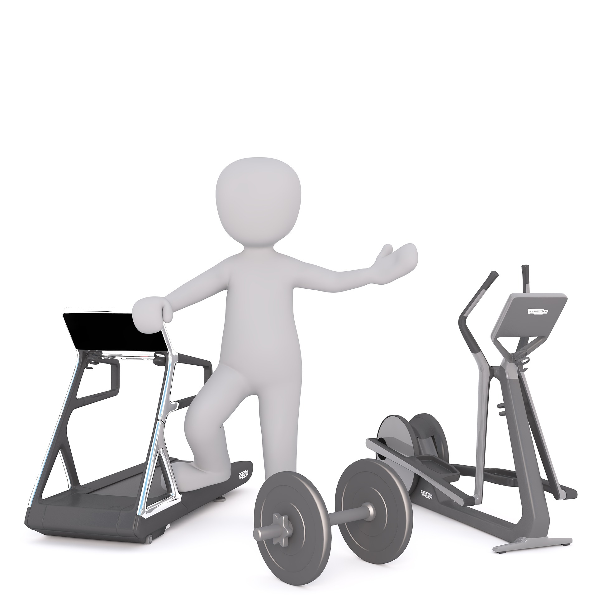- Burpees:son un magnífico ejercicio tanto para la ganancia de fuerza como para perder grasa.
- Saltos al cajón:si lo realizamos este ejercicio a una velocidad lo suficientemente intensa y elevada, vamos a conseguir un efecto similar al de los burpees.
- Flexiones:Su músculo objetivo principal es el pectoral, pero en función de la abertura de brazos que utilicemos y de las posiciones, podremos solicitar en mayor o menor medida el trabajo de otros músculos como, por ejemplo, los tríceps.
- Batidas de cuerda:este ejercicio sirve para ganar fuerza, pero además nos brinda un mejoramiento notorio en nuestra condición física por su intensidad, y por esta última es que aumenta la quema de grasas en nuestro cuerpo.
- Montain climbers:Un trabajo muscular completo, de pectorales, hombros, abdominales que mejora de la capacidad pulmonar y resistencia cardiovascular, mejora la coordinación y representa un gran gasto calórico.
Alimentación

alimentos para aumentar masa muscular:
Proteínas como:
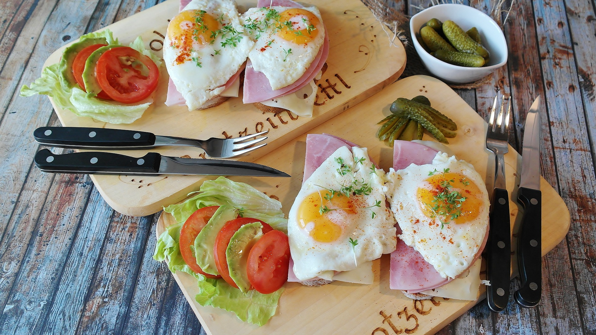- Huevos
- pavo y pollo
- Pescado
- Carnes rojas
- plátano: Gran fuente de proteína e hidratos de carbono. Es uno de los alimentos más ricos en potasio y además, aporta magnesio y calcio.
- crema de maní
grasas buenas como:

- cacahuates: Los frutos secos con mayor contenido en proteínas son los cacahuetes, las nueces y las almendras.
- almendras
- Aguacate
- Aceite de oliva
legumbres
Vitaminas como:
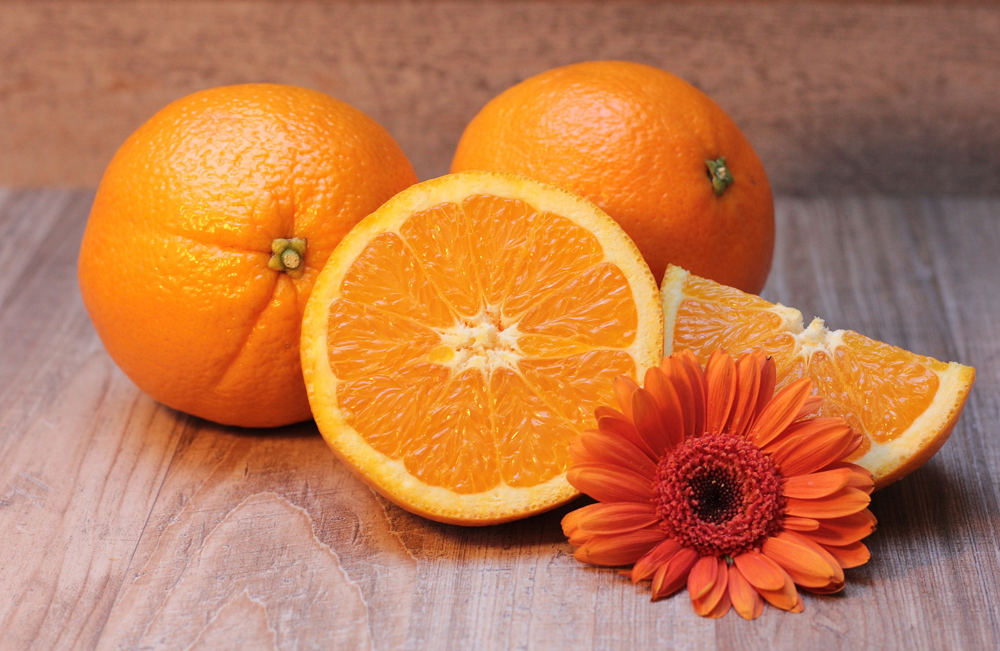- Cítricos, ya que su vitamina C es necesaria para fabricar colágeno, que está presente en las fibras musculares y las mantiene elásticas.
Carbohidratos como:
- Cereal
- pan
- pasta y arroz
- frijoles
- lentejas…
Y alimentos ricos en fibra como lechuga, acelga, zanahorias crudas y espinaca, así como manzana, pera…
Tomando en cuenta estos alimentos que, aunque sea solo una mención de los más importantes dentro de su categoría basada en su valor alimenticio, podemos crear nuestras propias comidas de forma que logremos satisfacer nuestra necesidad y meta alimenticia.
alimentos para quemar grasa y bajar de peso:
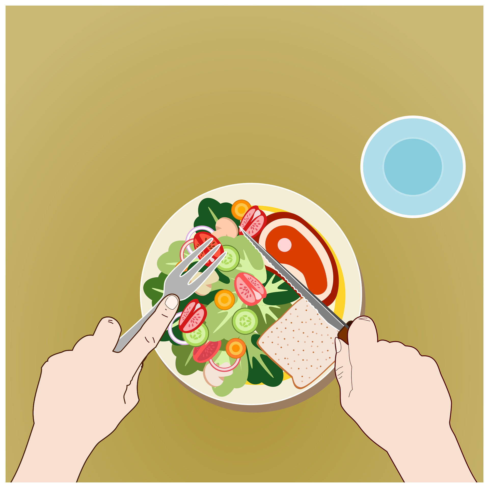- Té verde: es un excelente antioxidante y una de las mejores infusiones quemagrasa.
- yogurt: ayuda al organismo a metabolizar mejor la grasa y reduce la creación de nuevos depósitos de grasa.
- Aceite de oliva: es una grasa buenas que facilita que el cuerpo elimine la grasa blanca y la sustituya por grasa parda.
- Lentejas: el hierro que contienen facilita la combustión de la grasa al igual que otras vitaminas que transforman esa grasa en energía.
- Manzana: es baja en sodio, calorías y grasa; a la vez que aporta fibra, vitaminas, minerales, antioxidantes y otros nutrientes que ayudan a bajar de peso de forma saludable.
- Limón: fruta con efecto diurético y quemagrasa.
- Aceite de coco: aumenta el metabolismo, lo que como consecuencia nos hace quemar energía más rápido.
- Canela: estimula la digestión, desinflama el abdomen y reduce los niveles de colesterol.
- Tomate: es una fuente de minerales, fibra y vitaminas. Además, es un excelente desintoxicante, depurador y quemagrasas natural del cuerpo.
Y otros como:
vinagre de sidra de manzana orgánico:
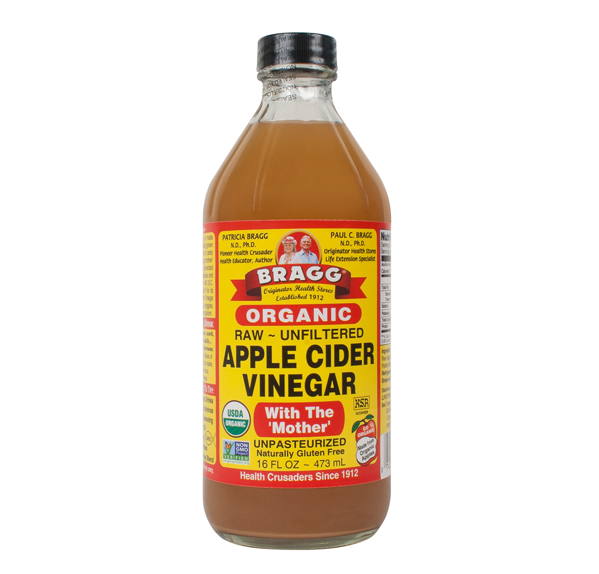Importante realizar la mención del vinagre de sidra de manzana orgánico, pues este tiene una cantidad increíble de propiedades como: mantiene estables los niveles de azúcar en la sangre, reduce el colesterol, desintoxíca el hígado, mejora la circulación, mejora el metabolismo, funciona para bajar de peso, y además tiene propiedades antibacterianas lo que lo hace a su vez una buena alternativa para combatir el acné, pues se ha popularizado por ser muy efectivo para ello.